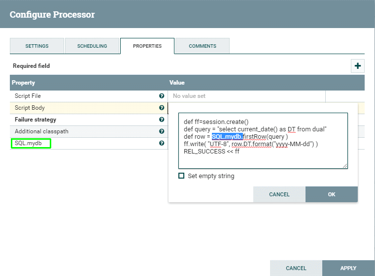

Summary
This is a grooviest groovy script :)
Script Bindings:
| variable | type | description |
|---|
| session |
org.apache.nifi.processor.ProcessSession |
the session that is used to get, change, and transfer input files |
| context |
org.apache.nifi.processor.ProcessContext |
the context (almost unuseful) |
| log |
org.apache.nifi.logging.ComponentLog |
the logger for this processor instance |
| REL_SUCCESS |
org.apache.nifi.processor.Relationship |
the success relationship |
| REL_FAILURE |
org.apache.nifi.processor.Relationship |
the failure relationship |
| CTL |
java.util.HashMap<String,ControllerService> |
Map populated with controller services defined with `CTL.*` processor properties.
The `CTL.` prefixed properties could be linked to controller service and provides access to this service from a script without additional code. |
| SQL |
java.util.HashMap<String, groovy.sql.Sql> |
Map populated with `groovy.sql.Sql` objects connected to corresponding database defined with `SQL.*` processor properties.
The `SQL.` prefixed properties could be linked only to DBCPSercice. |
| RecordReader |
java.util.HashMap<String,RecordReaderFactory> |
Map populated with controller services defined with `RecordReader.*` processor properties.
The `RecordReader.` prefixed properties are to be linked to RecordReaderFactory controller service instances. |
| RecordWriter |
java.util.HashMap<String,RecordSetWriterFactory> |
Map populated with controller services defined with `RecordWriter.*` processor properties.
The `RecordWriter.` prefixed properties are to be linked to RecordSetWriterFactory controller service instances. |
| Dynamic processor properties |
org.apache.nifi.components.PropertyDescriptor |
All processor properties not started with `CTL.` or `SQL.` are bound to script variables |
SQL map details
Example: if you defined property `SQL.mydb` and linked it to any DBCPService,
then you can access it from code SQL.mydb.rows('select * from mytable')
The processor automatically takes connection from dbcp service before executing script and tries to handle transaction:
database transactions automatically rolled back on script exception and committed on success.
Or you can manage transaction manually.
NOTE: Script must not disconnect connection.


SessionFile - flow file extension
The (org.apache.nifi.processors.groovyx.flow.SessionFile) is an actual object returned by session in Extended Groovy processor.
This flow file is a container that references session and the real flow file.
This allows to use simplified syntax to work with file attributes and content:
set new attribute value
flowFile.ATTRIBUTE_NAME = ATTRIBUTE_VALUE
flowFile.'mime.type' = 'text/xml'
flowFile.putAttribute("ATTRIBUTE_NAME", ATTRIBUTE_VALUE)
//the same as
flowFile = session.putAttribute(flowFile, "ATTRIBUTE_NAME", ATTRIBUTE_VALUE)
remove attribute
flowFile.ATTRIBUTE_NAME = null
//equals to
flowFile = session.removeAttribute(flowFile, "ATTRIBUTE_NAME")
get attribute value
String a = flowFile.ATTRIBUTE_NAME
write content
flowFile.write("UTF-8", "THE CharSequence to write into flow file replacing current content")
flowFile.write("UTF-8"){writer->
do something with java.io.Writer...
}
flowFile.write{outStream->
do something with output stream...
}
flowFile.write{inStream, outStream->
do something with input and output streams...
}
get content
InputStream i = flowFile.read()
def json = new groovy.json.JsonSlurper().parse( flowFile.read() )
String text = flowFile.read().getText("UTF-8")
transfer flow file to success relation
REL_SUCCESS << flowFile
flowFile.transfer(REL_SUCCESS)
//the same as:
session.transfer(flowFile, REL_SUCCESS)
work with dbcp
import groovy.sql.Sql
//define property named `SQL.db` connected to a DBCPConnectionPool controller service
//for this case it's an H2 database example
//read value from the database with prepared statement
//and assign into flowfile attribute `db.yesterday`
def daysAdd = -1
def row = SQL.db.firstRow("select dateadd('DAY', ${daysAdd}, sysdate) as DB_DATE from dual")
flowFile.'db.yesterday' = row.DB_DATE
//to work with BLOBs and CLOBs in the database
//use parameter casting using groovy.sql.Sql.BLOB(Stream) and groovy.sql.Sql.CLOB(Reader)
//write content of the flow file into database blob
flowFile.read{ rawIn->
def parms = [
p_id : flowFile.ID as Long, //get flow file attribute named `ID`
p_data : Sql.BLOB( rawIn ), //use input stream as BLOB sql parameter
]
SQL.db.executeUpdate(parms, "update mytable set data = :p_data where id = :p_id")
}
Handling processor start & stop
In the extended groovy processor you can catch `start` and `stop` and `unscheduled` events by providing corresponding static methods:
import org.apache.nifi.processor.ProcessContext
import java.util.concurrent.atomic.AtomicLong
class Const{
static Date startTime = null;
static AtomicLong triggerCount = null;
}
static onStart(ProcessContext context){
Const.startTime = new Date()
Const.triggerCount = new AtomicLong(0)
println "onStart $context ${Const.startTime}"
}
static onStop(ProcessContext context){
def alive = (System.currentTimeMillis() - Const.startTime.getTime()) / 1000
println "onStop $context executed ${ Const.triggerCount } times during ${ alive } seconds"
}
static onUnscheduled(ProcessContext context){
def alive = (System.currentTimeMillis() - Const.startTime.getTime()) / 1000
println "onUnscheduled $context executed ${ Const.triggerCount } times during ${ alive } seconds"
}
flowFile.'trigger.count' = Const.triggerCount.incrementAndGet()
REL_SUCCESS << flowFile